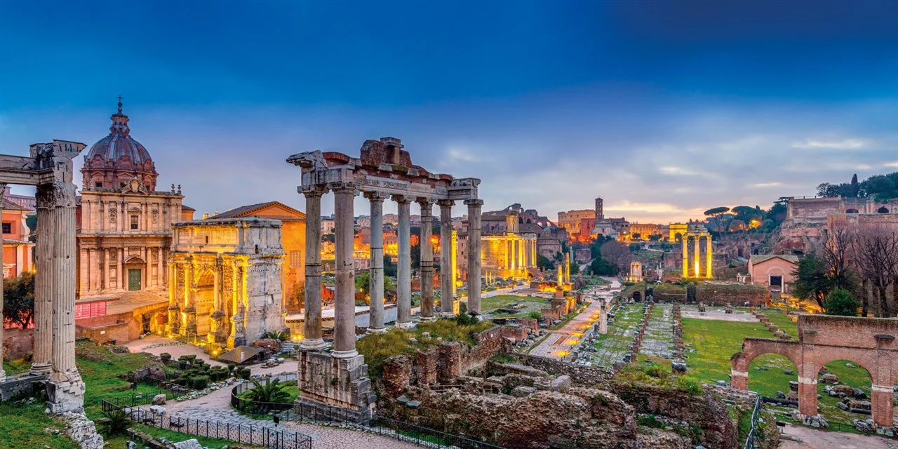
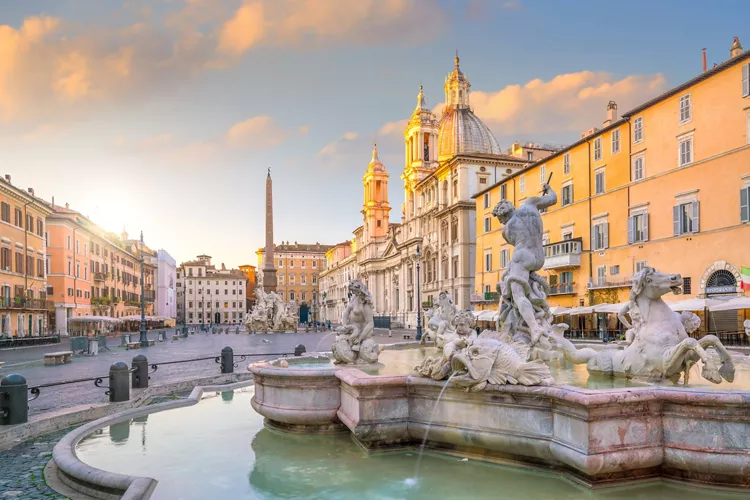
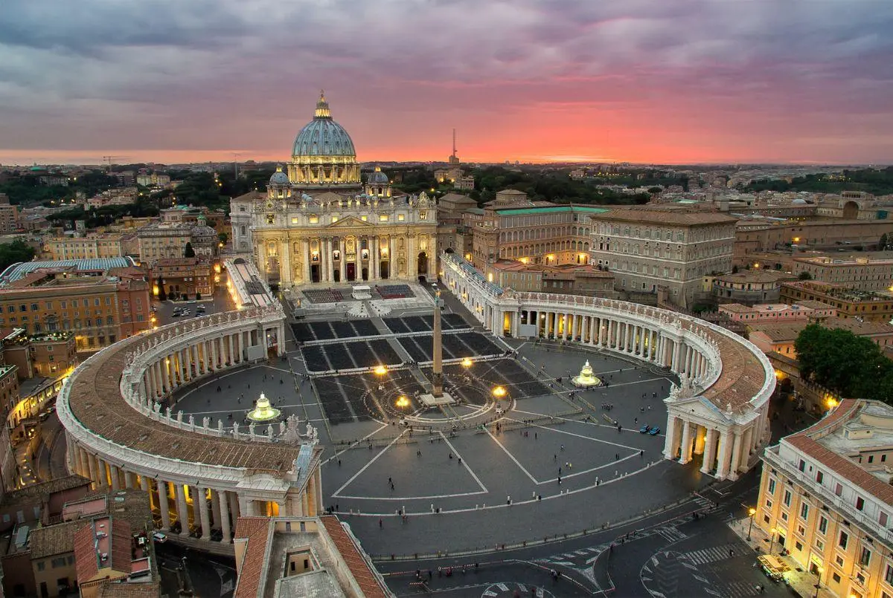

History and Culture of Rome
Discover the Soul of the Eternal City
Ever wondered why Rome draws millions of visitors every year? The
answer lies in its unique history, vibrant culture, and timeless
charm. Rome is not just a destination—it's an experience that blends
history, art, faith, and flavor.
A Journey Through Time: The History of Rome

Rome was founded over 2,700 years ago. According to legend, it was
established by Romulus in 753 BC. What began as a small village
eventually became the capital of the greatest empire of the ancient
world.
Walking through its streets feels like wandering through an open-air
museum. The Colosseum, the Roman Forum, and the Pantheon are just a
few of the many landmarks that echo the grandeur of ancient Rome.
Every stone tells a story, every corner holds the secrets of emperors,
gladiators, and gods.
"The history of Rome spans over a thousand years, during which it
transformed from a monarchy to a republic and later to an empire that
ruled much of the known world."
Wikipedia - Ancient Rome
Living Culture in Every Corner

What makes Rome truly special is that its culture is still alive. The
city pulses with creativity, tradition, and everyday life. The legacy
of the empire mingles with the hustle of markets, street performers,
and trattorias rich with aroma.
Rome inherited many ideas and styles from the Greeks but added its own
touch. From arches and grand avenues to public baths and laws, its
influence continues to shape the modern world.
"The Romans greatly benefited from their contact with Greek culture,
which they deeply admired. Yet they developed their own culture,
centered on practicality and organization."
El Historiador
Faith, Art, and Tradition

Religion has always been part of Roman life. From ancient gods to the
rise of Christianity, Rome became the spiritual heart of the Catholic
world. St. Peter's Basilica and the Vatican are living witnesses of
this deep connection between faith and art.
"In the 4th century, Christianity was officially adopted by Emperor
Constantine and became the state religion."
Wikipedia - Ancient Rome
Sources:
Wikipedia - Ancient Rome,
El Historiador